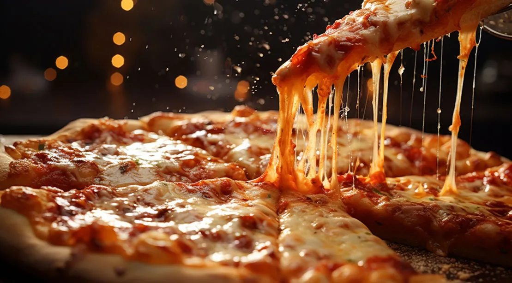

Pizza Recipe

Follow these steps and embark on your journey to deliciousness
I have been following this recipe for years. This is a simple recipe that does not require a lot of prep time or ingredients. I have followed it for most of my life. As long as you follow the baking instructions on the crust, you will be fine.
Ingredients
- Crust (of your choosing)
- Pepperoni
- Cheese (preferably mozzarella)
- Nonstick spray
- Pizza sauce (of your choosing)
steps
- Read the instructions on how to bake the crust you purchased. After you have read the directions, preheat the oven and begin making your pizza with the following steps.
- Remove the crust and spread pizza sauce on it.
- After the sauce is evenly spread, cover the pizza with cheese. How much you add is based on your preference.
- Add the pepperoni on top. If you like other toppings on your pizza, feel free to add them at this time. If you want to add meat, make sure you cook it first.
- Spray nonstick pray onto a baking sheet and put your pizza in the oven. If you do not have a baking sheet, you can also but the pizza directly on the oven rack.
- Remove the pizza after the suggestion cooking time on the crust you purchased. Let it cool for 5 to 10 minutes and Enjoy!